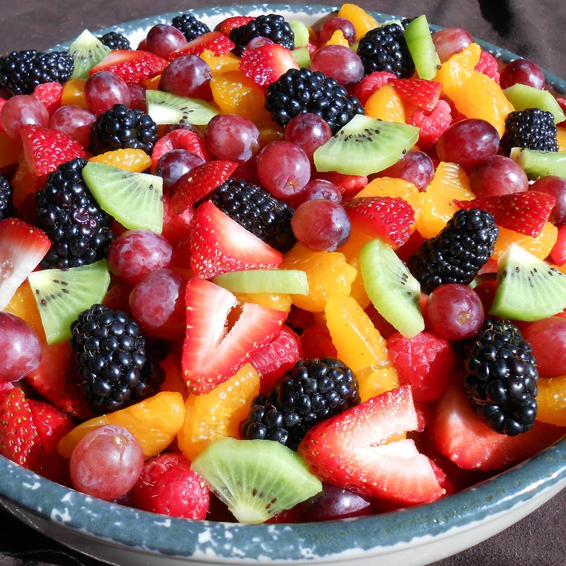

Odin Recipes

Perfect Summer Fruit Salad
The perfect fruit salad for a backyard bbq or any occasion. There are never leftovers! This is one of my favorite fruit salad recipes, as I think the sauce really makes it. This salad is tastier the longer you can let it soak in its juices. I prefer 3 to 4 hours in the refrigerator before I serve it. Enjoy.
Fruit Salad
Ingredients
- 2/3 cup fresh orange juice
- 1/3 cup fresh lemon juice
- 1/3 cup packed brown sugar
- 1/2 teaspoon grated orange zest
- 1/2teaspoon grated lemon
- 1 teaspoon vanilla extract
- 2 cups cubed fresh pineapple
- 2 cups strawberries,hulled and sliced
- 3 kiwi fruit,peeled and sliced
- 3 bananas,sliced
- 2 oranges,peeled and sectioned
- 1 cup seedless grapes
- 2 cups blueberries
Directions
- Bring orange juice, lemon juice, brown sugar, orange zest, and lemon zest to a boil in a saucepan over medium-high heat. Reduce heat to medium-low, and simmer until slightly thickened, about 5 minutes. Remove from heat, and stir in vanilla extract. Set aside to cool.
- Layer the fruit in a large, clear glass bowl in this order: pineapple, strawberries, kiwi fruit, bananas, oranges, grapes, and blueberries. Pour the cooled sauce over the fruit. Cover and refrigerate for 3 to 4 hours before serving.
Nutrition Facts
Per Serving: 155 calories; protein 1.8g; carbohydrates 39g; fat 0.6g; sodium 4.7mg. Full Nutrition